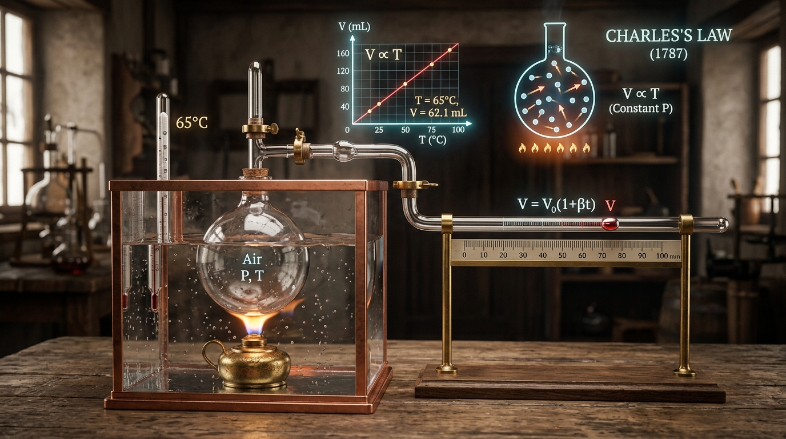
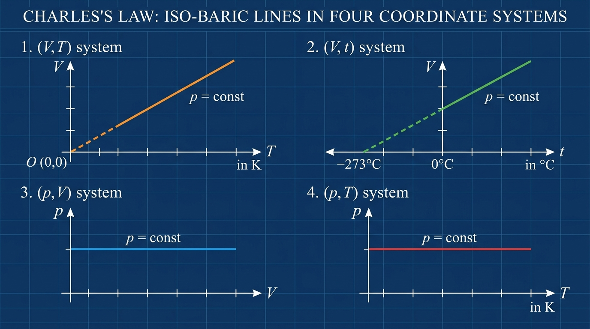

Bài 10: Định Luật Charles - Quá Trình Đẳng Áp

Hiện tượng nở vì nhiệt đẳng áp: Không khí được đun nóng nở rộng, giảm khối lượng riêng giúp khinh khí cầu bay lên
NỘI DUNG BÀI HỌC
1. Quá Trình Đẳng Áp & Thang Nhiệt Độ Kelvin
Khi đun nóng một lượng khí được giữ trong xi-lanh có piston di chuyển tự do không ma sát, áp suất khí bên trong luôn tự cân bằng với áp suất khí quyển bên ngoài. Quá trình biến đổi trạng thái như vậy gọi là quá trình đẳng áp.
Là quá trình biến đổi trạng thái của một lượng khí xác định trong đó áp suất $p$ được giữ không đổi ($p = \text{const}$).
Trong vật lý chất khí, nhiệt độ được tính theo đơn vị Kelvin ($T$). Công thức đổi từ độ Celsius ($t$) sang Kelvin ($T$) là: $$\mathbf{T\text{ (K)} = t\text{ (}^\circ\text{C)} + 273}$$
2. Định Luật Charles ($\frac{V}{T} = \text{const}$)
Năm 1787, nhà bác học người Pháp Jacques Charles đã thực hiện các đo đạc thực nghiệm chính xác và phát biểu định luật về sự nở vì nhiệt của chất khí ở áp suất cố định:

Thực nghiệm Jacques Charles (1787): Thể tích V tỉ lệ thuận với nhiệt độ tuyệt đối T ở áp suất không đổi
Đối với một lượng khí xác định ở áp suất không đổi, thể tích $V$ của khối khí tỉ lệ thuận với nhiệt độ tuyệt đối $T$ của nó.
Khi khối khí chuyển từ trạng thái 1 $(V_1, T_1)$ sang trạng thái 2 $(V_2, T_2)$ ở áp suất không đổi, ta có hệ thức liên hệ:
3. Đồ Thị Đường Đẳng Áp Trong Các Hệ Tọa Độ
Đường biểu diễn sự biến thiên của thể tích $V$ theo nhiệt độ $T$ khi áp suất $p$ giữ không đổi được gọi là đường đẳng áp.

Đồ thị đường đẳng áp trong 4 hệ tọa độ (V, T), (V, t), (p, V), (p, T).
| Hệ tọa độ | Dạng đường đẳng áp | Đặc điểm đồ thị & Lưu ý quan trọng |
|---|---|---|
| Hệ $(V, T)$ | Đường thẳng hướng về gốc tọa độ $O(0\text{ K}, 0\text{ L})$ |
- Ở nhiệt độ cực thấp gần $0\text{ K}$, chất khí bị hóa lỏng/hóa rắn nên định luật không còn đúng. - Với 2 áp suất khác nhau $p_1$ và $p_2$: Đường phía dưới ứng với áp suất lớn hơn ($p_2 > p_1 \Rightarrow$ đường $p_2$ nằm dưới $p_1$). |
| Hệ $(V, t)$ | Đường thẳng kéo dài cắt trục nhiệt độ Celsius tại $-273^\circ\text{C}$ | Thể tích $V = V_0(1 + \alpha t)$ với $\alpha = \frac{1}{273}\text{ K}^{-1}$. |
| Hệ $(p, V)$ | Đường thẳng nằm ngang song song với trục $V$ | Áp suất $p$ giữ nguyên giá trị không đổi bất chấp thể tích $V$ thay đổi. |
| Hệ $(p, T)$ | Đường thẳng nằm ngang song song với trục $T$ | Áp suất $p$ giữ nguyên giá trị không đổi bất chấp nhiệt độ tuyệt đối $T$ thay đổi. |
4. Giải Thích Bằng Thuyết Động Học Phân Tử
Dưới góc nhìn vi mô, thuyết động học phân tử giải thích định luật Charles một cách rõ ràng:
Khi nhiệt độ tuyệt đối $T$ tăng, động năng trung bình và tốc độ chuyển động của phân tử khí tăng lên.
Các phân tử va chạm vào thành bình mạnh hơn và nhiều hơn.
Để giữ áp suất $p$ không bị tăng vọt (không đổi), khối khí buộc phải nở rộng thể tích $V$ để giảm mật độ phân tử, giữ lực tác dụng trung bình không đổi.
5. Thí Nghiệm Kiểm Chứng
THÍ NGHIỆM KIỂM CHỨNG ĐỊNH LUẬT CHARLES
Mô phỏng tương tác💡 Hướng dẫn: Thay đổi nhiệt độ T để quan sát thể tích V tự động co giãn và đường đẳng áp biểu diễn tương ứng trên đồ thị.
6. Các Dạng Bài Tập Và Phương Pháp Giải
Phương pháp giải:
- Xác định các thông số ở Trạng thái 1 ($V_1, T_1$) và Trạng thái 2 ($V_2, T_2$) ở áp suất $p$ không đổi.
- Áp dụng công thức định luật Charles: $$\frac{V_1}{T_1} = \frac{V_2}{T_2} \implies V_2 = V_1 \cdot \frac{T_2}{T_1}$$
- Lưu ý quan trọng: Bắt buộc đổi nhiệt độ Celsius ($t$) sang nhiệt độ tuyệt đối Kelvin ($T = t + 273$).
📝 Ví dụ 1:
Một lượng khí có thể tích $4\text{ m}^3$ ở nhiệt độ $7^\circ\text{C}$. Nung nóng đẳng áp lượng khí trên đến nhiệt độ $27^\circ\text{C}$. Tính thể tích của lượng khí sau khi nung nóng.
💡 Hướng dẫn giải:
- Trạng thái 1: $V_1 = 4\text{ m}^3$, $T_1 = 7 + 273 = 280\text{ K}$.
- Trạng thái 2: $V_2 = ?$, $T_2 = 27 + 273 = 300\text{ K}$.
- Áp dụng định luật Charles cho quá trình đẳng áp:
$$\frac{V_1}{T_1} = \frac{V_2}{T_2} \implies V_2 = V_1 \cdot \frac{T_2}{T_1} = 4 \times \frac{300}{280} \approx 4,29\text{ m}^3$$Kết luận: Thể tích lượng khí sau nung nóng xấp xỉ $4,29\text{ m}^3$.
📝 Ví dụ 2:
Ở nhiệt độ $27^\circ\text{C}$, thể tích của một lượng khí là $6\text{ lít}$. Thể tích của lượng khí đó ở nhiệt độ $337^\circ\text{C}$ khi áp suất không đổi là bao nhiêu lít?
💡 Hướng dẫn giải:
- Trạng thái 1: $V_1 = 6\text{ lít}$, $T_1 = 27 + 273 = 300\text{ K}$.
- Trạng thái 2: $V_2 = ?$, $T_2 = 337 + 273 = 610\text{ K}$.
- Áp dụng định luật Charles:
$$\frac{V_1}{T_1} = \frac{V_2}{T_2} \implies V_2 = 6 \times \frac{610}{300} = 12,2\text{ lít}$$Kết luận: Thể tích của lượng khí ở $337^\circ\text{C}$ bằng $12,2\text{ lít}$.
Phương pháp giải:
- Khối khí giam trong bình cầu thể tích $V_0$ gắn ống nhỏ nằm ngang tiết diện $S$. Giọt thủy ngân cách A khoảng $x$.
- Thể tích khí ở các trạng thái: $V_1 = V_0 + S \cdot x_1$, $V_2 = V_0 + S \cdot x_2$.
- Áp dụng định luật Charles cho quá trình đẳng áp: $$\frac{V_0 + S \cdot x_1}{T_1} = \frac{V_0 + S \cdot x_2}{T_2}$$
📝 Ví dụ 3:
Một áp kế khí gồm bình cầu thủy tinh thể tích $V_0$ gắn với ống nhỏ nằm ngang tiết diện $S = 0,1\text{ cm}^2$. Ở $10^\circ\text{C}$, giọt thủy ngân cách A $20\text{ cm}$; ở $20^\circ\text{C}$, giọt thủy ngân cách A $130\text{ cm}$. Coi dung tích bình không đổi và áp suất không đổi. Tính thể tích $V_0$ của bình cầu.
💡 Hướng dẫn giải:
- Trạng thái 1: $T_1 = 10 + 273 = 283\text{ K}$, $V_1 = V_0 + 0,1 \times 20 = V_0 + 2\text{ cm}^3$.
- Trạng thái 2: $T_2 = 20 + 273 = 293\text{ K}$, $V_2 = V_0 + 0,1 \times 130 = V_0 + 13\text{ cm}^3$.
- Áp dụng định luật Charles:
$$\frac{V_0 + 2}{283} = \frac{V_0 + 13}{293} \implies 293(V_0 + 2) = 283(V_0 + 13)$$ $$10 V_0 = 3679 - 586 = 3093 \implies V_0 = 309,3\text{ cm}^3$$Kết luận: Dung tích của bình cầu bằng $309,3\text{ cm}^3$.
Phương pháp giải:
- Khối lượng khí $m$ không đổi: $D = \frac{m}{V} \implies V = \frac{m}{D}$.
- Trong quá trình đẳng áp: $$D_1 \cdot T_1 = D_2 \cdot T_2$$
- (Khối lượng riêng của khí tỉ lệ nghịch với nhiệt độ tuyệt đối $T$).
📝 Ví dụ 4:
Biết $12\text{ g}$ khí chiếm thể tích $4\text{ lít}$ ở $7^\circ\text{C}$. Sau khi nung nóng đẳng áp, khối lượng riêng của khí là $1,2\text{ g/lít}$. Tính nhiệt độ của khối khí sau khi nung nóng (theo $^\circ\text{C}$).
💡 Hướng dẫn giải:
- Khối lượng riêng ở trạng thái 1: $D_1 = \frac{m}{V_1} = \frac{12}{4} = 3\text{ g/lít}$.
- Nhiệt độ tuyệt đối trạng thái 1: $T_1 = 7 + 273 = 280\text{ K}$.
- Áp dụng mối liên hệ khối lượng riêng trong quá trình đẳng áp:
$$D_1 \cdot T_1 = D_2 \cdot T_2 \implies 3 \times 280 = 1,2 \times T_2 \implies T_2 = \frac{840}{1,2} = 700\text{ K}$$- Đổi sang nhiệt độ Celsius: $t_2 = 700 - 273 = 427^\circ\text{C}$.
Kết luận: Nhiệt độ khối khí sau khi nung nóng bằng $427^\circ\text{C}$.
Phương pháp giải:
- Xi-lanh chia 2 phần bởi pit-tông tự do: Khi pit-tông dừng lại, áp suất khí ở 2 phần cân bằng nhau ($p_1 = p_2$).
- Đối với từng phần khí, áp dụng định luật Charles cho quá trình đẳng áp: $\frac{V}{T} = \text{const}$.
📝 Ví dụ 5:
Một xi-lanh kín cách nhiệt được chia làm hai phần bằng nhau bởi một pit-tông cách nhiệt. Mỗi phần có chiều dài $l_0 = 20\text{ cm}$ chứa lượng khí giống nhau ở $27^\circ\text{C}$. Đun nóng phần 1 làm pit-tông dịch chuyển không ma sát sang phần 2 một đoạn $2\text{ cm}$ rồi dừng lại. Tính nhiệt độ của khí ở phần 1 sau khi đun nóng (theo $^\circ\text{C}$).
💡 Hướng dẫn giải:
- Vì pit-tông dừng lại nên áp suất hai bên bằng nhau (quá trình đẳng áp).
- Chiều dài cột khí phần 1 tăng: $l_1 = 20 + 2 = 22\text{ cm}$. Chiều dài cột khí phần 2 giảm: $l_2 = 20 - 2 = 18\text{ cm}$.
- Áp dụng định luật Charles cho hai phần khí:
$$\frac{l_1}{T_1'} = \frac{l_2}{T_2'} \implies \frac{22}{T_1'} = \frac{18}{300} \implies T_1' = \frac{22 \times 300}{18} \approx 366,7\text{ K}$$- Nhiệt độ Celsius ở phần 1: $t_1' = 366,7 - 273 = 93,7^\circ\text{C}$.
Kết luận: Nhiệt độ khí ở phần 1 khi đó bằng $93,7^\circ\text{C}$.
📌 Quá trình đẳng áp: Áp suất $p$ được giữ không đổi ($p = \text{const}$).
📌 Định luật Charles: Thể tích $V$ tỉ lệ thuận với nhiệt độ tuyệt đối $T$: $\frac{V}{T} = \text{const}$ hay $\frac{V_1}{T_1} = \frac{V_2}{T_2}$.
📌 Đồ thị $(V, T)$: Đường kéo dài đi qua gốc $O(0\text{ K}, 0\text{ L})$. Đường có áp suất $p$ lớn hơn nằm phía dưới.
📌 Thang nhiệt độ tuyệt đối: Bắt buộc quy đổi sang Kelvin: $T\text{ (K)} = t\text{ (}^\circ\text{C)} + 273$.